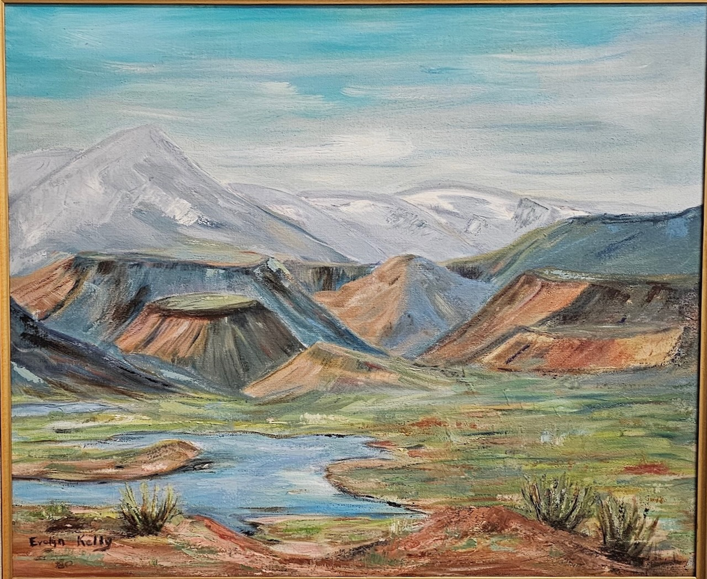
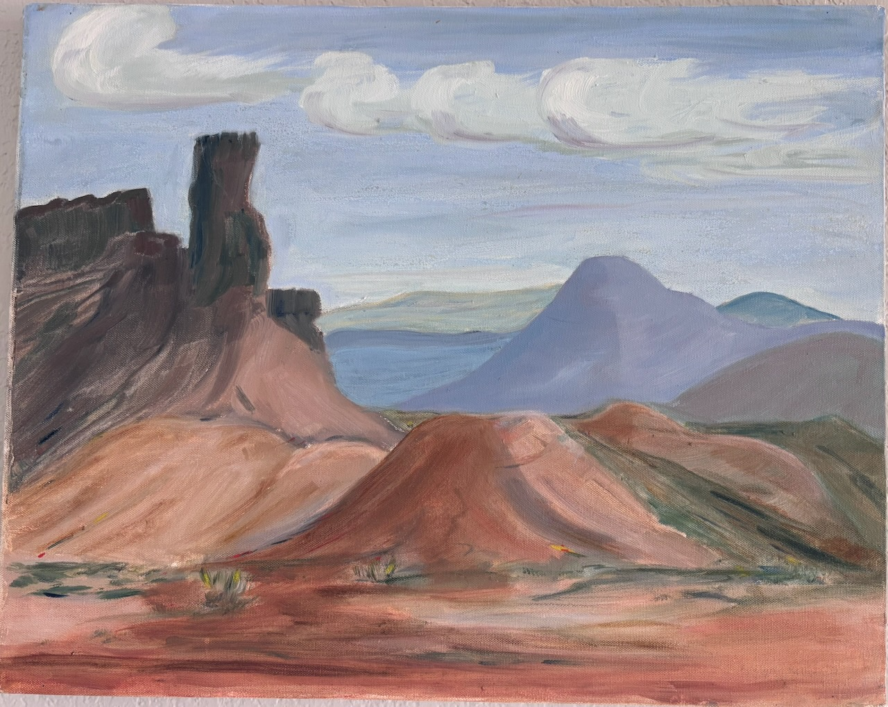
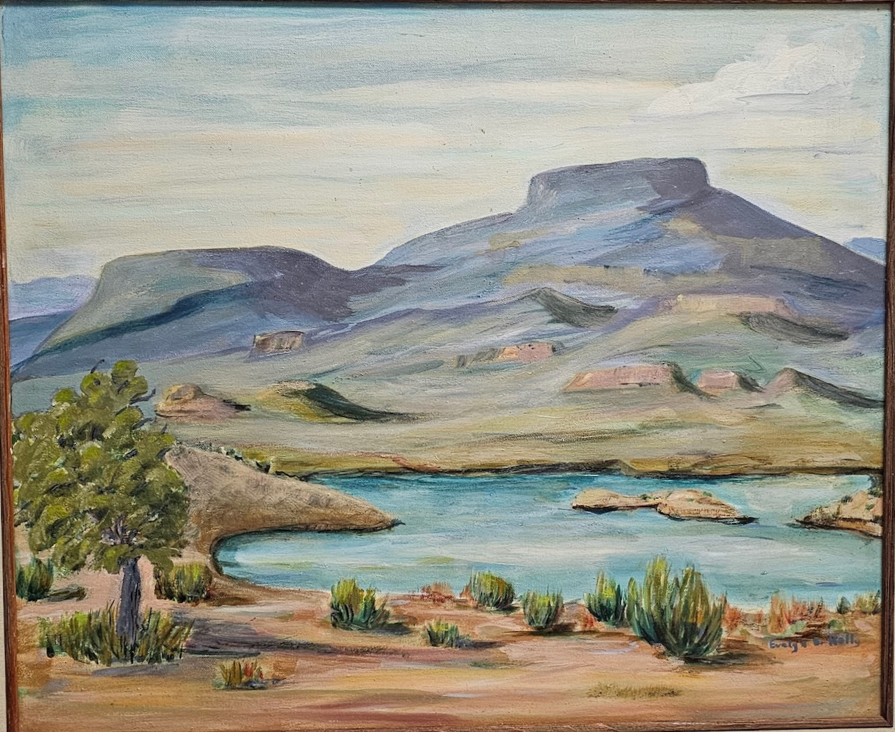
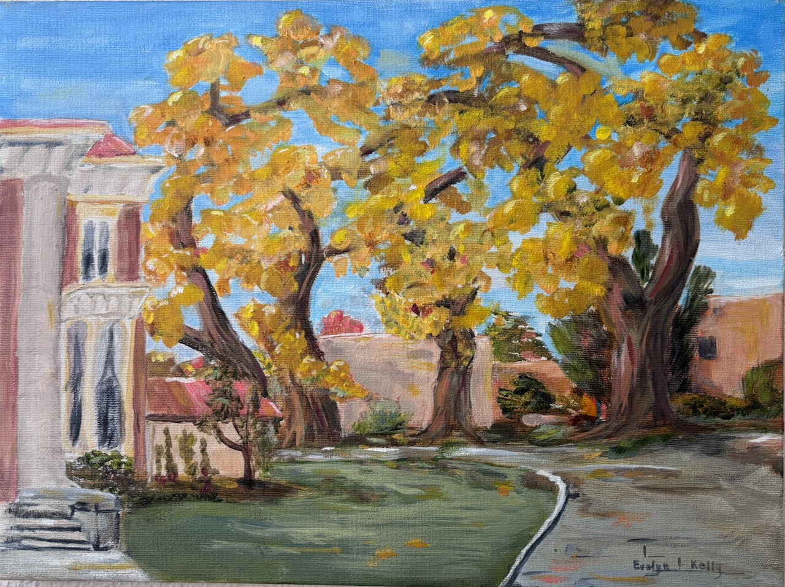
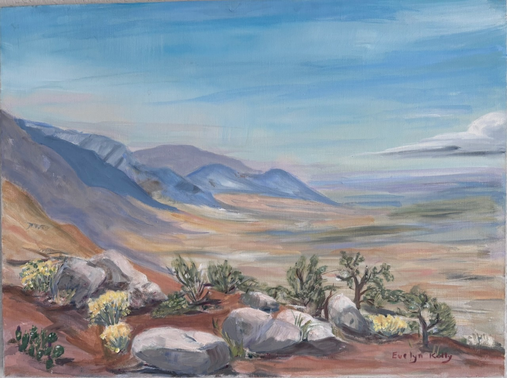

Evelyn Eugenia Napper Kelly -- Paintings

Abiquiu Damn and Jamez Mountains, New Mexico -- May 1980

Chimney Rock, Ghost Ranch, New Mexico ~ 1984

Perdernal Peak & Abiquiu Damn Near Ghost Ranch, New Mexico -- May 1986

Luna Mansion in Las Lunas, New Mexico ~ 1987

West Side of the Sandia Mountains looking South ~ 1989